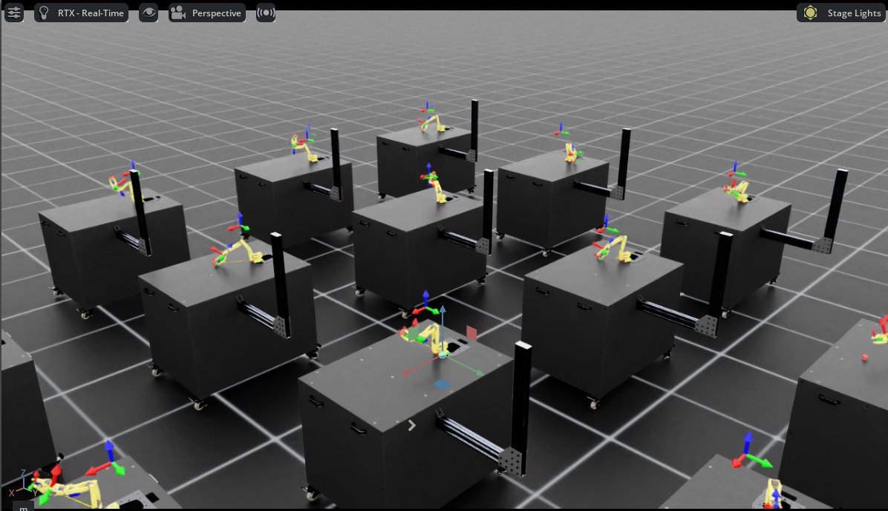
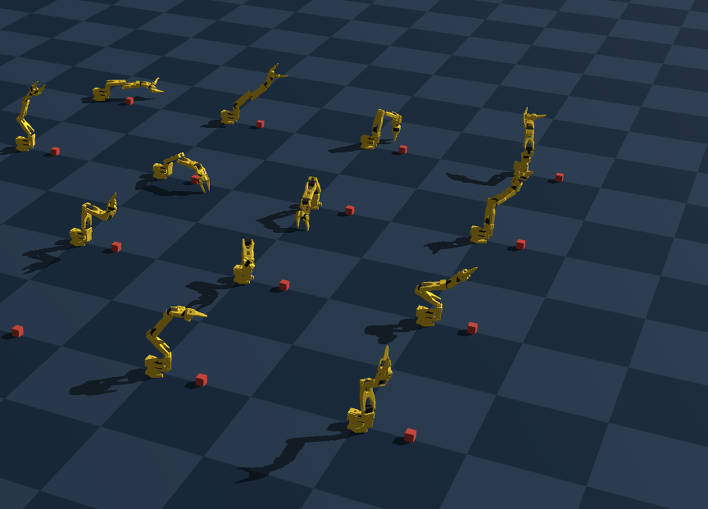

Inha University
Feb 2025 – Feb 2027 (Expected)
M.S. in Artificial Intelligence
I am a M.S. student in Artificial Intelligence at Inha University, affiliated with the Generative Computing Lab, advised by Prof. Namhyuk Ahn. I received my B.S. in Electronic Engineering from Inha University in Feb 2025.
Previously, I worked as a Computer Vision Developer intern at Light Vision (Jun 2024 – Dec 2024).
My research interests include diffusion models, world models, vision-language-action (VLA), and physical AI.
I also keep a notes site where I write about what I'm studying and the projects I'm working on.


TL;DR: A training-free framework that improves compositional text-to-image generation by grounding LLM-synthesized layouts and reranking candidates with an object-centric VLM judge at inference time.
TL;DR: A vision-language model drives every stage of occluded-object completion — dynamically discovering scene entities, judging and adaptively expanding boundary-truncated regions, and writing appearance-aware inpainting prompts — reducing detection failures and improving reconstruction quality over fixed-pipeline baselines.
Participating in a physical AI bootcamp focused on robotic manipulation, reinforcement learning and vision-language-action-models.
Research on diffusion models and generative AI, focused on text-to-image generation.
Developed computer vision models for an unmanned parking control system, including crowd counting, weather classification, and water segmentation.
A real SO-101 arm running a SmolVLA policy to pick up a black circular tape and place it into a black box. The first policy, trained on 30 demonstrations, was deployed but moved jerkily and often failed. Reviewing the collected episodes showed several with the hand blocking the camera view or ending in failed grasps; after filtering these out and retraining on the remaining 25 clean demonstrations, the policy performed the task reliably (video above). Compared with an ACT policy trained on the same data, SmolVLA produced noticeably finer, more precise motion, and — thanks to its larger VLM backbone — followed complex instructions more accurately.

A simulation-only manipulation pipeline that combines privileged-state PPO teachers, multi-view demonstration collection, ACT vision-policy training, and closed-loop evaluation for cube lifting and pick-and-place.
code
GPU-parallel PPO training for the SO-101 robot arm (up to thousands of environments at once) on the Genesis simulator, plus an LLM-driven RoboGen-style pipeline where Claude autonomously proposes tasks, generates scenes and reward functions, and runs the training loop end to end.
code
A training-free framework that improves compositional text-to-image generation by grounding LLM-synthesized layouts and reranking candidates with an object-centric VLM judge at inference time.
project page codeA VLM-driven pipeline that reasons through entity discovery, occlusion-order filtering, adaptive boundary expansion, and appearance-aware prompting to reconstruct occluded objects. To appear in the Journal of KIISE.
codeA real-time model that analyzes CCTV footage from an unmanned parking control system to detect crowd density and count people during accidents or emergencies. (Light Vision)
A deep learning model that quickly recognizes and automatically classifies adverse weather conditions, such as heavy rain and heavy snow, from parking lot CCTV footage. (Light Vision)
A segmentation system that precisely detects water regions in CCTV footage to distinguish normal conditions from flooding, for disaster preparedness. (Light Vision)